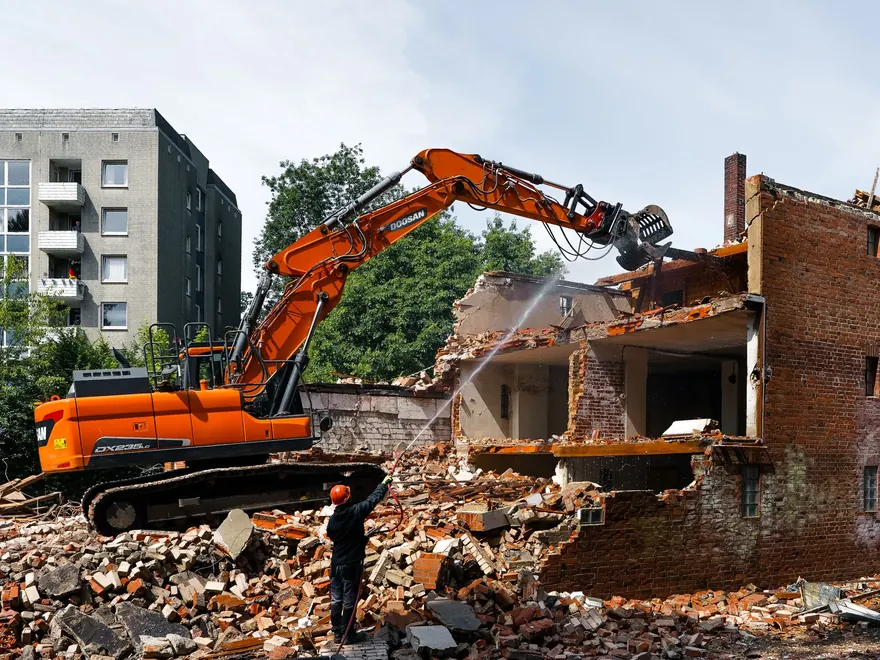

L-01
Ēku un būvju nojaukšana
Nojaucam dzīvojamās, ražošanas un saimniecības ēkas ar tehniku vai pa daļām, ja blakus ir citas ēkas. Darbus plānojam tā, lai būvlaukums un apkārtne paliktu droši.
- Mūra, betona un koka ēkas
- Šķūņi, garāžas, saimniecības ēkas
- Pamatu izņemšana
